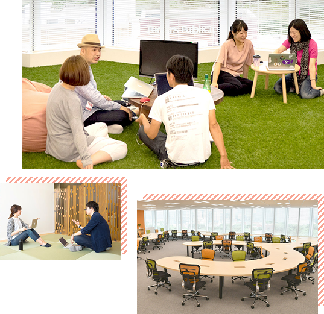
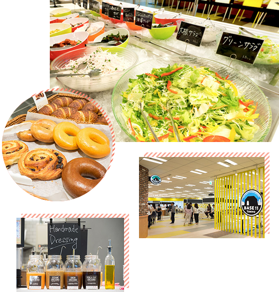
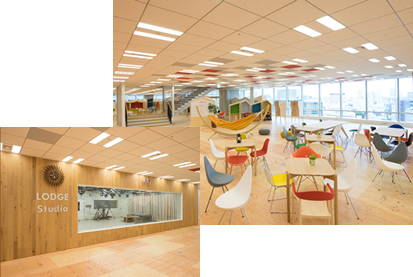

永田町駅から徒歩1分。その日の予定に合わせてカジュアルな服装で、気分にあわせて芝生の上でミーティング…これが、ヤフー本社の日常の風景です。
自由な雰囲気の中、あなたらしく働いてみませんか？
 社員食堂はおしゃれ！週替わりのメニューから量り売りのビュッフェまであるので、好きな物を好きな分だけチョイスも可能。焼きたてのパンやサラダなど、ラインナップも充実しています。
お弁当の持ち込みも可能なので、お弁当派と社食派が一緒になってワイワイ過ごしています。楽しいランチタイムは、「午後も頑張ろう！」と前向きな気持ちにさせてくれます。
社員以外の方も利用できるコワーキングスペース「LODGE（ロッジ）」では、ほぼ毎日イベントが開催されています。3Dプリンターでネイルを作るといった趣味系や、数学をおさらいする勉強系など、内容はさまざま！中でも、東北の復興支援系や地方創生系イベントなどは毎回大盛況で、派遣スタッフの方も多数参加されています。
ヤフー本社は、朝から夜まで魅力いっぱい！
データ入力や書類ファイリングなど、各部署での事務サポートが中心です。20～30代の女性が多数活躍中！教えてもらえる環境なので、未経験でも安心です。
朝はゆっくり
9時半or10時スタートが基本。気持ちにゆとりをもって通勤できます！
残業ほぼなし
基本的には定時で帰れます♪残業はあっても月5時間程度ですので、ワークライフバランスを重視したい方にもおすすめです。
PC基本操作
PCスキルは、文字入力ができれば大丈夫。ITやネットに詳しくなくてもOKです。
気さくな方が多いのですぐになじめました
用事がある日に上司が「もう帰る時間だよ！」と声を掛けてくれました
わからないことは先輩が丁寧に教えてくれます
ヤフーはユーザー数の多いサービスを提供しているため、やりがいを感じます
ヤフーの多くの部署でテンプスタッフの派遣スタッフの方が活躍しています。「やってみたい！」と思ったら、まずは気軽にご相談ください。あなたの経験や希望に合う仕事をご紹介します。